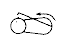

This maneuver measures passive flexor tone about the pelvic girdle by
testing for passive flexion or resistance to extension of posterior hip
flexor muscles.
The infant is placed supine and the flexed lower extremity is brought to
rest on the mattress alongside the infant's trunk.
The examiner supports the infant's thigh laterally alongside the body with
the palm of one hand. The other hand is used to grasp the infant's foot at
the sides and to pull it toward the ipsilateral ear.
The examiner fells for resistance to extension of the posterior pelvic
girdle flexors and notes the location of the heel where significant
resistance is appreciated. Landmarks noted in order of increasing maturity
include resistance felt when the heel is at or near the:
Ear (-1);
Nose
(0);
Chin level (1);
Nipple line (2);
Umbilical area (3); and
Femoral
crease (4).
| SIGN | NEURO-MUSCULAR MATURITY SCORE | SIGN SCORE | ||||||
| -1 | 0 | 1 | 2 | 3 | 4 | 5 | ||
| Heel To Ear |
 |
 |
 |
 |
 |
|||